Sicher am PC arbeiten – Arbeitsheft mit Lösungen (IT 6/7, Realschule Bayern)

Malware erkennen, Daten sichern – Arbeitsheft mit Lösungen (IT 6/7, Realschule Bayern)

Multinationale Konzerne Lückentext mit Wortspeicher Hörverstehen und Suchsel

Die Geschichte des Computers – Arbeitsheft mit Lösungen (IT 6/7, Realschule Bayern)

Geschäftsbrief am PC: Aufbau nach Norm – Arbeitsheft mit Lösungen (IT 8/9, Realschule Bayern)
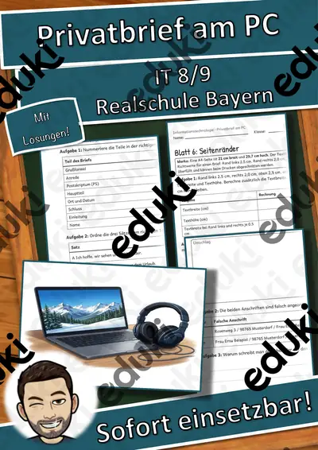
Privatbrief am PC: Aufbau und Layout – Arbeitsheft mit Lösungen (IT 8/9, Realschule Bayern)

Mittelalterliches Königtum Lückentext mit Wortspeicher Hörverstehen und Suchsel

Mischfarben Lückentext mit Wortspeicher Hörverstehen und Suchsel
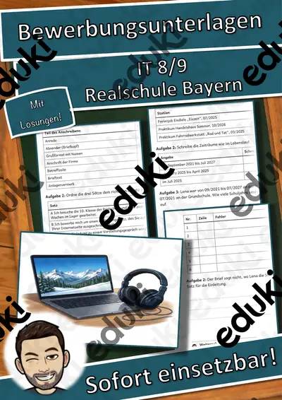
Bewerbungsunterlagen am PC erstellen – Arbeitsheft mit Lösungen (IT 8/9, Realschule Bayern)

EVA-Prinzip: Eingabe, Verarbeitung, Ausgabe – Arbeitsheft mit Lösungen (IT 6/7, Realschule Bayern)

Diagramme aus Tabellen erzeugen – Arbeitsheft mit Lösungen (IT 6/7, Realschule Bayern)
Eine Präsentation erstellen: Schritt für Schritt – Arbeitsheft mit Lösungen (IT 7/8, Realschule)
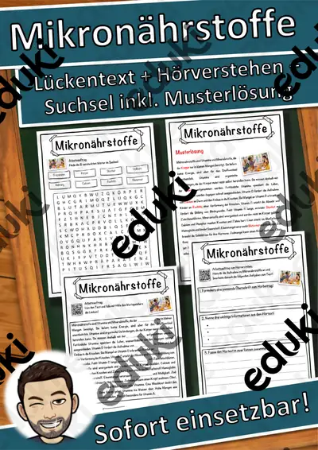
Mikronährstoffe Lückentext mit Wortspeicher Hörverstehen und Suchsel
Makronährstoffe Lückentext mit Wortspeicher Hörverstehen und Suchsel

Präsentation erarbeiten – Arbeitsheft mit Lösungen (IT 7/8, Realschule Bayern)

Hardware und Software verstehen – Arbeitsheft mit Lösungen (IT 6/7, Realschule Bayern)

Datenflussdiagramme zeichnen und lesen – Arbeitsheft mit Lösungen (IT 6/7, Realschule Bayern)

Tabellen anlegen und formatieren – Arbeitsheft mit Lösungen (IT 6/7, Realschule Bayern)
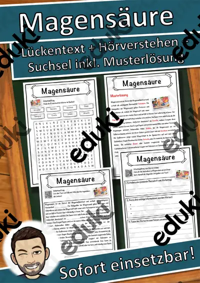
Magensäure Lückentext mit Wortspeicher Hörverstehen und Suchsel

Lichtsymbolik Lückentext mit Wortspeicher Hörverstehen und Suchsel

Zellbezüge: relativ oder absolut – Arbeitsheft mit Lösungen (IT 6/7, Realschule Bayern)
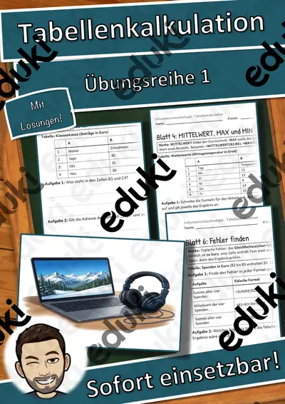
Tabellenkalkulation: Übungsreihe 1 – Arbeitsheft mit Lösungen (IT 6/7, Realschule Bayern)
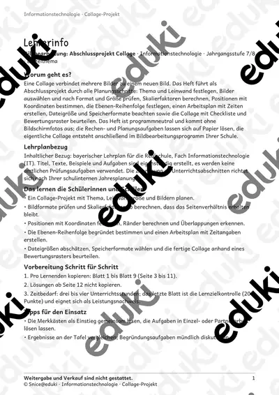
Bildbearbeitung: Abschlussprojekt Collage – Arbeitsheft mit Lösungen (IT 7/8, Realschule Bayern)

Laut und Phonem Lückentext mit Wortspeicher Hörverstehen und Suchsel
Lateralität Lückentext mit Wortspeicher Hörverstehen und Suchsel
LF 4 Industriemechaniker/-in: Wartungsplan und Wartungsintervalle – Übungen, Lösungen + Lernvideo

Summe, Mittelwert, Maximum: Funktionen verstehen – Arbeitsheft mit Lösungen (IT 6/7, Realschule)

Tabellenkalkulation: erste Tabelle, erste Formel – Arbeitsheft mit Lösungen (IT 6/7, Realschule)

Gute Bilder gestalten: Aufbau und Wirkung – Arbeitsheft mit Lösungen (IT 7/8, Realschule Bayern)
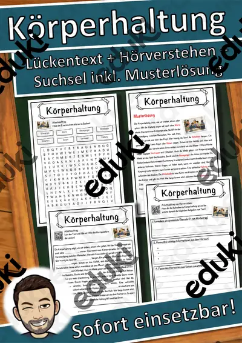
Körperhaltung Lückentext mit Wortspeicher Hörverstehen und Suchsel

Kirchenjahr Lückentext mit Wortspeicher Hörverstehen und Suchsel
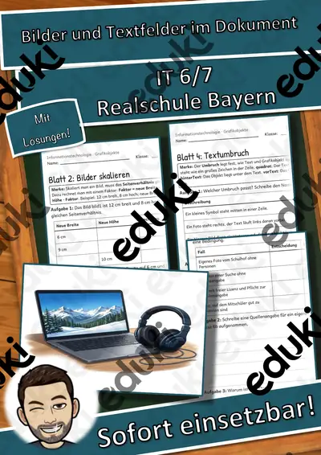
Bilder, Textfelder und Schriftzüge im Dokument – Arbeitsheft mit Lösungen (IT 6/7, Realschule)

Textverarbeitung festigen: Abschlussaufgabe – Arbeitsheft mit Lösungen (IT 6/7, Realschule Bayern)

Pixel- oder Vektorgrafik: Grafikarten im Vergleich – Arbeitsheft mit Lösungen (IT 6/7, Realschule)
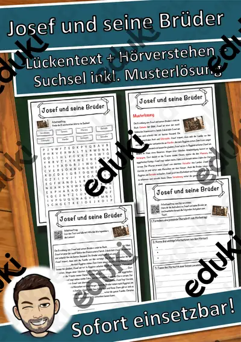
Josef und seine Brüder Lückentext mit Wortspeicher Hörverstehen und Suchsel
Hoffnung auf Vollendung Lückentext mit Wortspeicher Hörverstehen und Suchsel
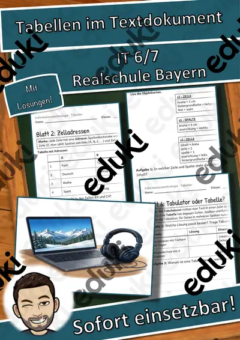
Tabellen im Textdokument gestalten – Arbeitsheft mit Lösungen (IT 6/7, Realschule Bayern)

Ebenentechnik für Einsteiger – Arbeitsheft mit Lösungen (IT 6/7, Realschule Bayern)

Bildbearbeitung: wichtige Begriffe – Arbeitsheft mit Lösungen (IT 6/7, Realschule Bayern)
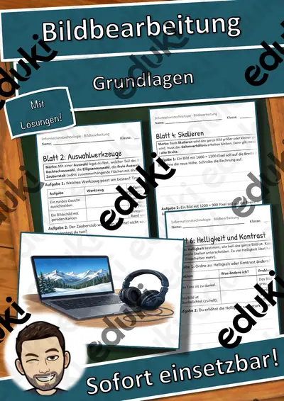
Bildbearbeitung mit GIMP: Grundlagen – Arbeitsheft mit Lösungen (IT 7/8, Realschule Bayern)

Hochdruckgebiet Lückentext mit Wortspeicher Hörverstehen und Suchsel

Himmelfahrt Lückentext mit Wortspeicher Hörverstehen und Suchsel
Bildbearbeitung_GIMP_Grundlagen_IT7_8

Textdokumente aufbauen: Zeichen, Absatz, Seite – Arbeitsheft mit Lösungen (IT 6/7, Realschule)

Programmierprojekt: ein kleines Spiel – Arbeitsheft mit Lösungen (IT 6/7, Realschule Bayern)

Hell-Dunkel-Kontrast Lückentext mit Wortspeicher Hörverstehen und Suchsel

Heliozentrisches Weltbild Lückentext mit Wortspeicher Hörverstehen und Suchsel
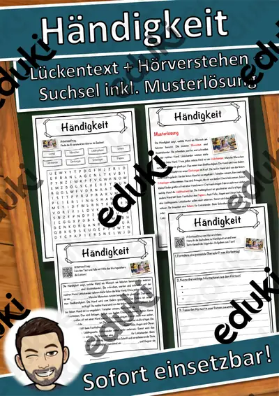
Händigkeit Lückentext mit Wortspeicher Hörverstehen und Suchsel
Keine Materialien gefunden – versuch einen anderen Suchbegriff oder Filter.